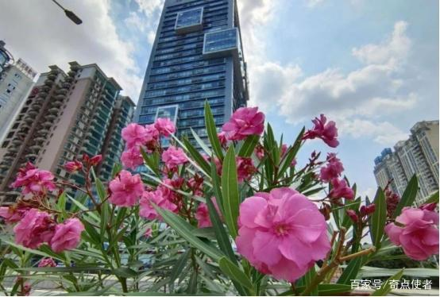
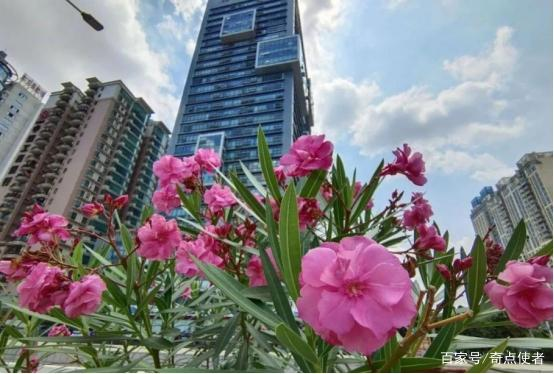

夹竹桃
夹竹桃（学名：Nerium oleander L.）夹竹桃族夹竹桃属常绿直立大灌木，高可达5米，枝条灰绿色，嫩枝条具棱，被微毛，老时毛脱落。叶3-4枚轮生，叶面深绿，叶背浅绿色，中脉在叶面陷入，叶柄扁平，聚伞花序顶生，花冠深红色或粉红色，花冠为单瓣呈5裂时，其花冠为漏斗状，种子长圆形，花期几乎全年，夏秋为最盛；果期一般在冬春季，栽培很少结果。
花大、艳丽、花期长，常作观赏；用插条、压条繁殖，极易成活。茎皮纤维为优良混纺原料；种子含油量约为58.5%，可榨油供制润滑油。叶、树皮、根、花、种子均含有多种配糖体，毒性极强，人、畜误食能致死。叶、茎皮可提制强心剂，但有毒，用时需慎重。
 

夹竹桃到底有多毒？
毒？夹竹桃非常容易栽培，在南方地区的生命力比较强，又因为具有较高的观赏价值和美化城市容貌的作用，被纳入城市绿化的植物种类。这种植物的花色十分艳丽，主要呈现粉红色和玫红色，花期比较长，但几乎全身上下都有毒。据研究，夹竹桃的茎、叶、花、皮、种子和汁液都有毒。夹竹桃含有的主要有毒成分是夹竹桃苷，主要作用于人体消化系统和心血管系统。
无论是人还是动物，误食后都有可能丧命，因为夹竹桃苷是一种毒性很强的毒素。曾有研究发现，一片夹竹桃叶子就可以夺走一个婴儿的生命，10片夹竹桃叶子可能让一个成年人丧命。眼镜王蛇的毒性为每千克3.58毫克，而夹竹桃的毒性是每千克0.5毫克，可见它的毒性比眼镜王蛇强7倍左右。
夹竹桃的毒性还与植物的生长年限相关，越年幼的夹竹桃毒性越强，这可能是它们长期在自然界中生存而演化出的自我防御机制。生长时间越长的夹竹桃毒性越弱，而城市道路和公园栽培的夹竹桃基本都是成年树种，因此毒性相对较弱一些。即使如此，在遇到夹竹桃时还是要小心，不要触碰它的汁液，因为汁液是有毒的。
既然夹竹桃有毒，为何还大量种植？
首先，夹竹桃具有较高的观赏价值，它的花期很长，而且一株夹竹桃开花的时候是一团团的，看上去非常漂亮。无论是栽种在道路还是公园里，都可以起到美化的效果。
其次是夹竹桃有抗烟雾、抗灰尘、抗毒物和净化空气、保护环境的能力。夹竹桃的叶片，对人体有毒、对二氧化硫、二氧化碳、氟化氢、氯气等有害气体有较强的抵抗作用。据测定，盆栽的夹竹桃，在距污染源40米处，仅受到轻度损害，170米处则基本无害，仍能正常开花，其叶片的含硫量比未污染的高7倍以上。夹竹桃即使全身落满了灰尘，仍能旺盛生长，被人们称为"环保卫士"。